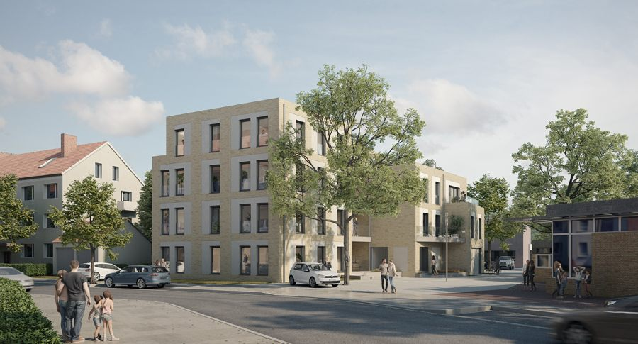
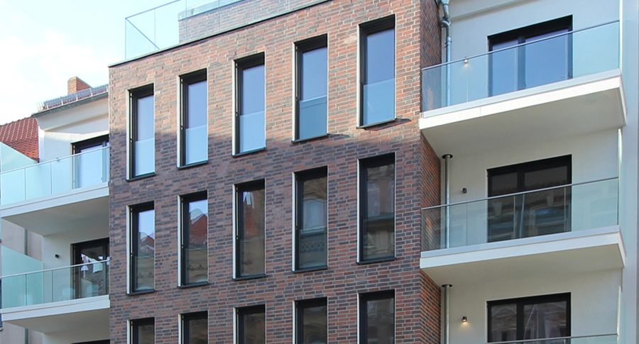
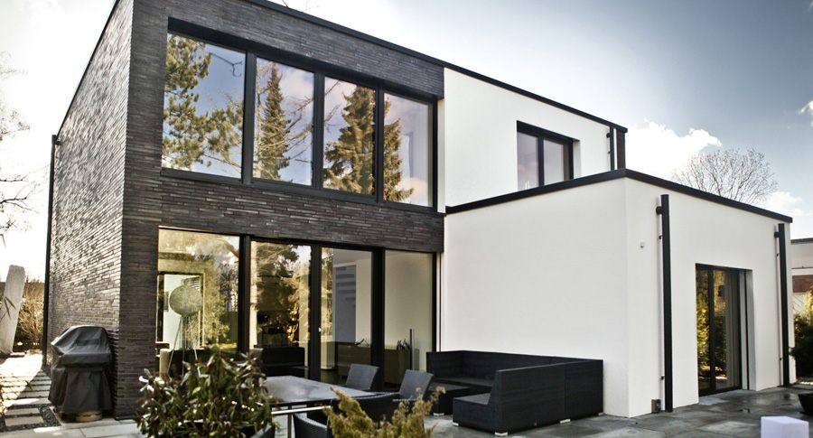
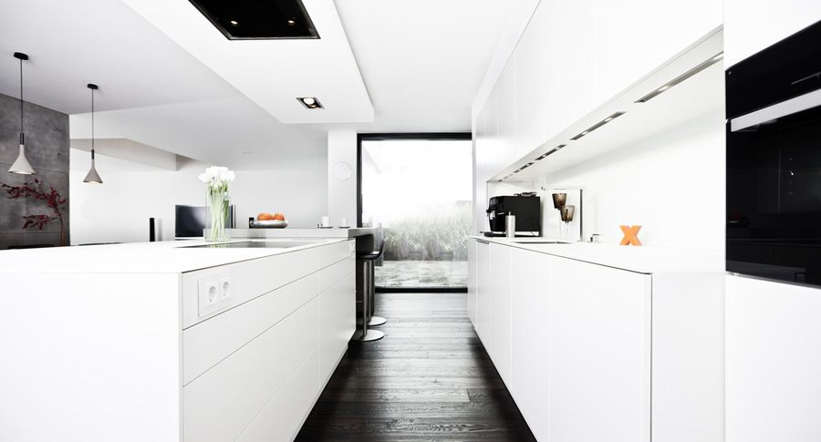
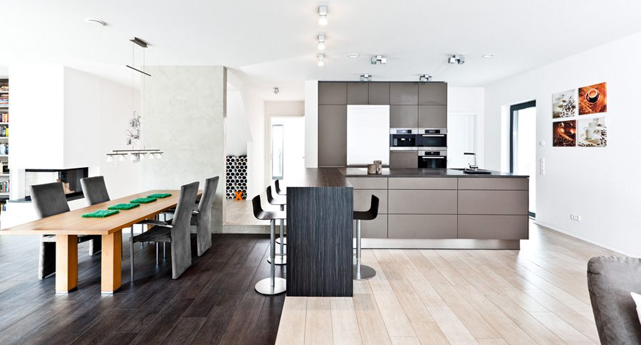

STIL x Architektur – Büro für STILvolle Architektur in Hannover
„Stil fängt da an, wo Begabung aufhört.“











STILvolle Architektur
STIL x Architektur steht für Entwurf, Planung und Bauausführung, Analyse und Beratung von Wohn-, Verwaltungs- und Gewerbeobjekten.
Bei Neubauten, Sanierungen, Modernisierungen und Projektierungen werden die Leistungsphasen 1 bis 9 angeboten: vom ersten gemeinsamen Gespräch bis zur Fertigstellung. Und auch über das Spektrum der HOAI hinaus – eine individuelle Betreuung für eine individuelle Architektur.
Bauen 4.0
Die einzelnen Techniken sind für sich nicht neu. Ihr Zusammenspiel hat das Büro zu einer Weiterentwicklung des seriellen Bauens veranlasst – vorproduzierte Betonwände und -decken, fast ausschließlich mineralische Baustoffe, Produktion je nach Möglichkeit direkt auf der Baustelle.
Beim Mehrfamilienhaus BCK09 stand der Rohbau mit Fenstern nach 75 Tagen: 1 Bauherr, 5 Bauarbeiter, 1 Architekt.